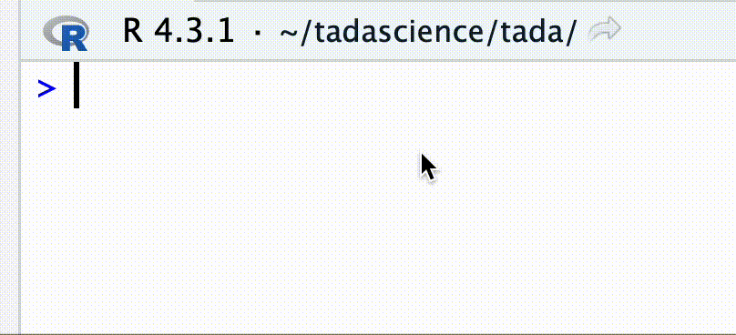
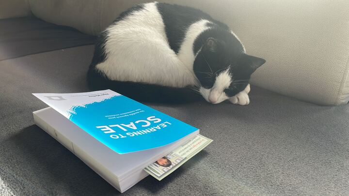

It’s already time to sunset 🌅 january, so let’s obey the tradition of rounding up what happened on the previous month. Ok this is mostly a motivational tradition at this point, as it has happened exactly zero times in the past, but you gotta start somewhere right ?!
xeus-r
This has been in the |> line for a while, but we finally were able to announce the initial version of xeus-r and write 📝 about it the Jupyter blog. xeus-r is a Jupyter kernel for R that is, as the name implies, based on the strong foundations of Xeus. Working on bootstrapping this project with the QuantStack team has been a privilege. Our vision is that it is going to open many doors for the intersection of Jupyter and R users. There is still a lot to do, let’s go 🚀.
tada⬢science
I bought the tada⬢science domain a while back, but did not do much with it apart from leaving some breadcrumbs 🍞 here and there, but I’ve now bit the bullet 🚄 and dived in to quarto to start structuring the site and this blog. It’s early days at the time of writing this wrapup, i.e. the landing page mostly contain a 🎉 emoji, but what else do you need really, that’s the best emoji.
I’ve asked ChatGPT what a tada scientist is, and this is one of this cases where the 🤖 was a bit unimaginative and gave me the typo treatment:
It seems like there might be a typo in your question. Did you mean to ask about a “data scientist”? A data scientist is a professional who uses scientific methods, processes, algorithms, and systems to extract knowledge and insights from structured and unstructured data. They often apply their skills in statistics, data analysis, and machine learning to analyze data and generate actionable insights. If this is not what you meant, could you please clarify your question?
… I would have prefered an hallucination 💭 in that instance, so I guess we are going to have to invent what is a tada⬢science, I’ll expand on that over time, but we can start with a new spin on the practice of data science. Let’s go from tidy data to tada duty 🤝.
tada 🎉
The tada 📦 was born and is currently in the release process 🏓 with CRAN. It currently only ships the pkg_roulette() function for a fun and engaging way to discover new R packages. You can find our more (not really) about it in this blog post but if you’re in a rush, here it is again.

This was received with a bit of curiosity and enthusiasm and a drop of “is that it?” from the community when I posted about it on linkedin and various other socials. I can relate to both the enthusiasm and the frustration, it’s a 🐣 package at this point. It will serve as a host for various tools to support the practice of tada⬢science.
You & R
One of my commitments for 2024 is the You & R podcast, which I hinted at in this linkedin post. I received many applications through the survey I shared with the post, and I can’t wait to get started and have these conversations. You & R is meant to be people centered safe place where we exchange stories about how we relate to R. I’ll invite people across() 😉 the spectrum of trajectories. No matter where you ® in your journey with our favorite data science tool, your story matters, and we’re all in this together. I want to hear and amplify stories about new R users who give us the privilege to hop on board this ⛵️ with us, as well as more experience R users.
I’m currently in the process of gearing up 🎙️🎧 🎥 and learning about things 🛠️ like riverside, so please bear with my while I upskill and stay tuned 🎶 for more You & R news.
Bandwidth 🧘♂️
There is currently some available bandwidth here, so if you need a tada⬢scientist to help you with an R thing, please reach out, linkedin is probably your safest bet right now, but I’m also in other socials 🦅 🦋 🐘 🧶. I’m confident you’ll find me.
Never Search Alone
I’ve enrolled in a Job Search Council following the approach described in the Never Search Alone book 📖. Although, I would not say I’m actually job hunting per se, the approach and the group I’ve joined 💜 is flexible enough to accommodate the particularities of the tada⬢science journey. Finding about about Never Search Alone has been a pivotal moment in my transition from my previous work life. As much as fast reading the book front to cover in two days was exciting, actually doing the work with a JSC is another level, I would recommend it to anyone going through a work cross roads moment.
Let’s see how it goes, but I’ll probably write about how I’m adapting the NSA approach to my specifics.
Reading
I’m committed to step up my reading habits, because there are a lot more things I want to apply my curiosity too. Last month I read Learning To Scale with my reading partner. Thanks again Diane 👸 for the recommendation, and the book. Learning to Lead, Leading to Learn is next on my list on the same theme.

Also finished Unbroken: the Trauma response is never wrong on a totally different topic. The trauma tapes is one of my favourite podcasts and the book goes further.
What Now, with Trevor Noah is an another one of my favourite podcasts, and the episode featuring Kerry Washington is what converted me to sign up to Audible. This is a fascinating story. Next on my Audible queue is Viola Davis’s Finding Me.
On the more technical front, I’ll go through C++20: the complete guide because there seems to be a lot of interesting new things happening in C++ 🤓🚀.
Citation
@online{françois2024,
author = {François, Romain},
title = {January 2024},
date = {2024-01-31},
url = {https://tada.science/posts/2024-01-31-january-2024},
langid = {en}
}